Приобретение практических навыков взаимодействия пользователя с системой посредством командной строки.
Каталог в котором я сейчас нахожусь
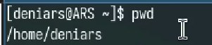
Переходим в tmp
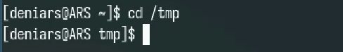
Выводим содержание tmp
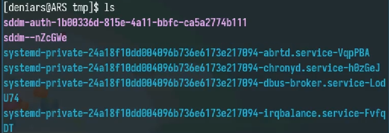
Используем флажок -а с ls. -a выводит все скрытые файлы
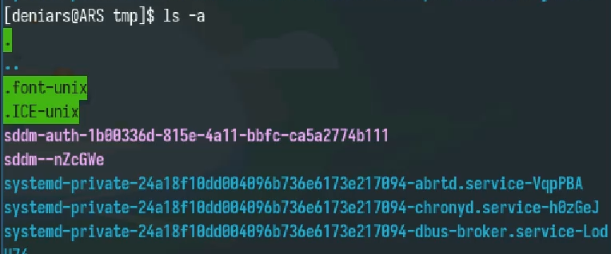
ls -s выводит подробную информацию
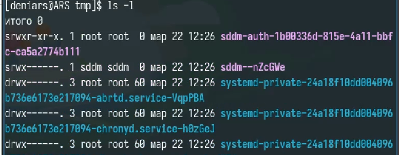
Создаем папку newdir
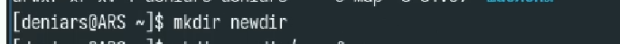
В папке newdir создаем папку morefun
Создаем и другие паки
И удаляем
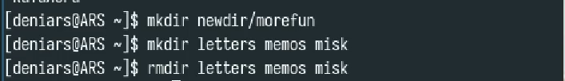
Удаляем newdir принудительно, используя флаг -r
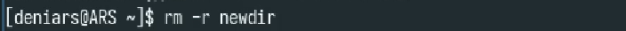
Смотрим какие флаги есть у команды ls и используем ls -tl для вывода
всей информации и вывод по времени
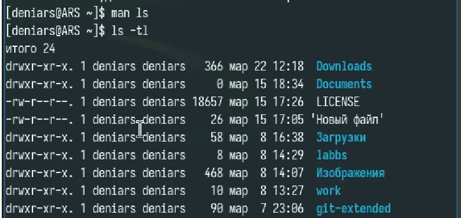
Используем man для вывода информации о команде
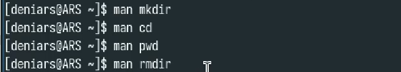
Используем команду history для вывода истории вводы команд
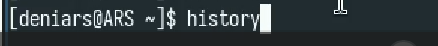
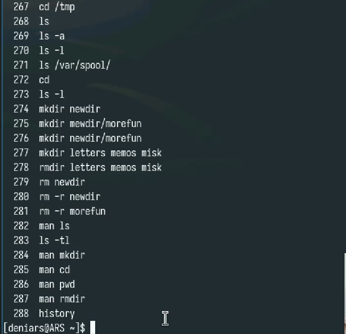
Вот что получилось
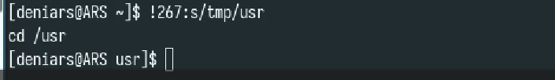
Я науличлся чуть лучше пользоваться командной строкой!